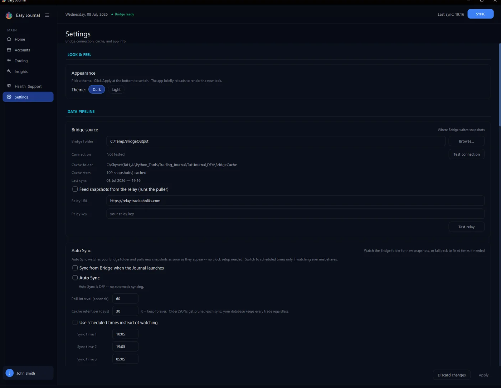
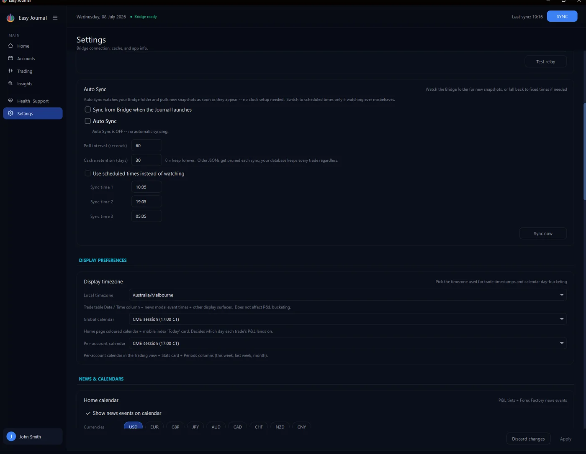
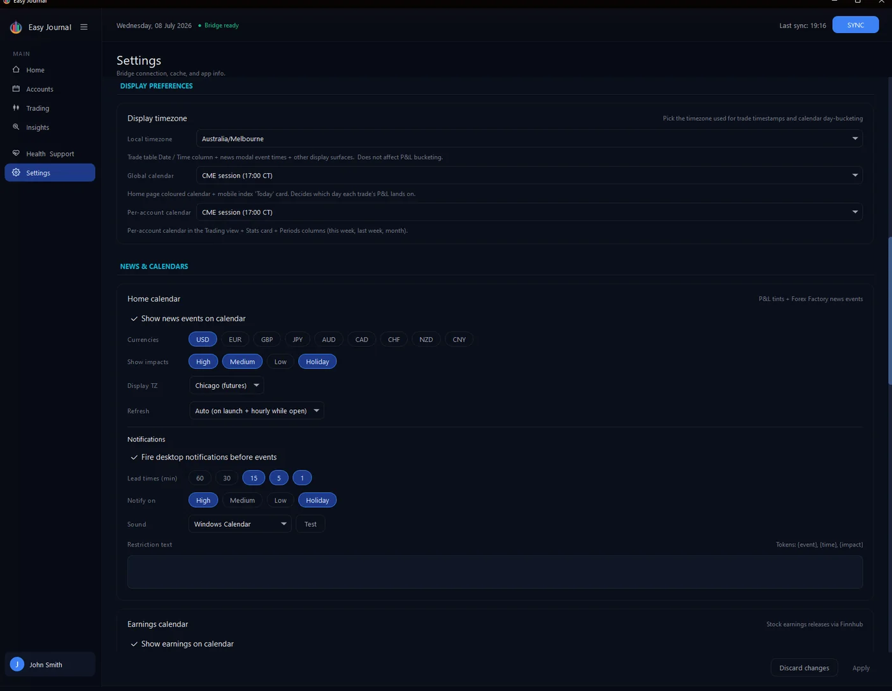
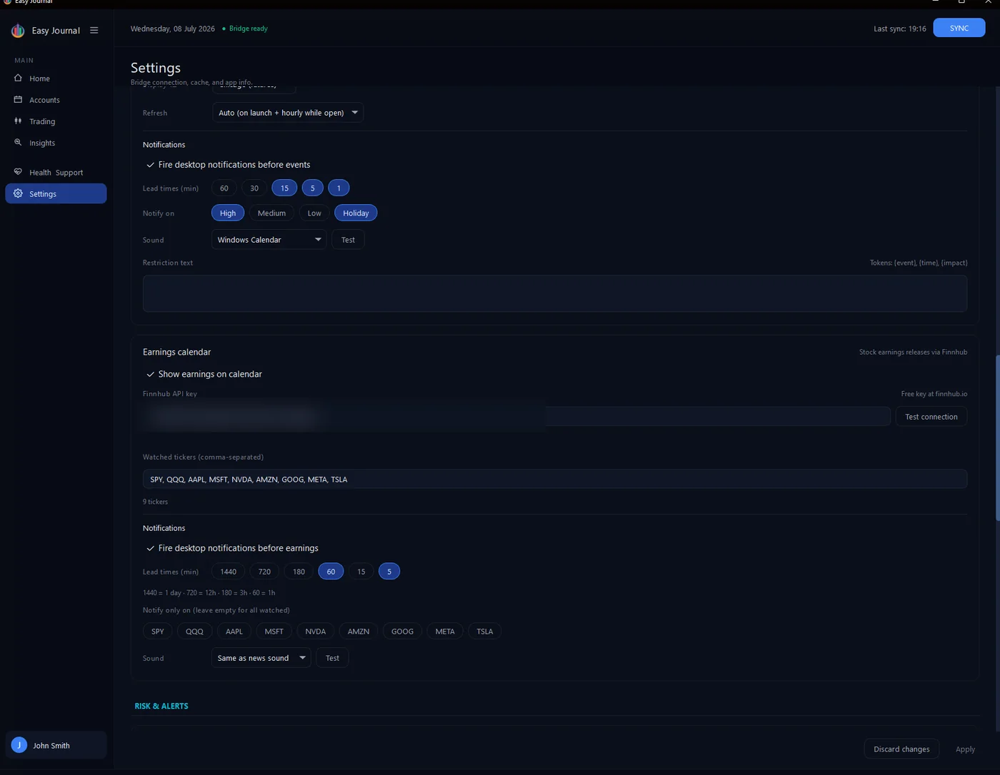
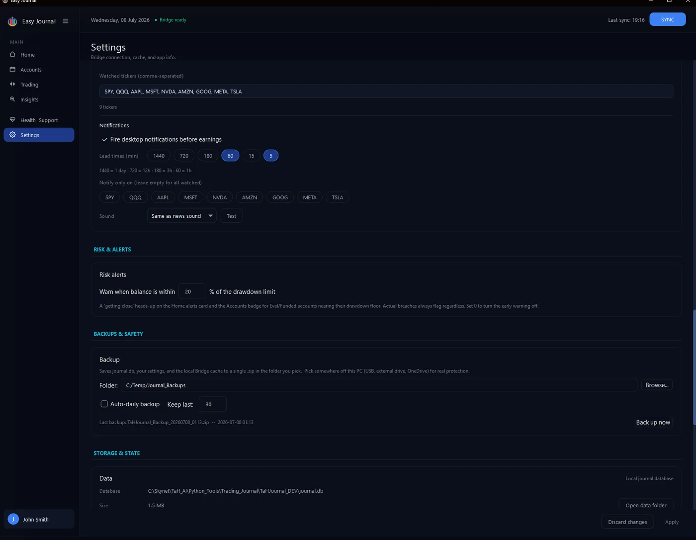
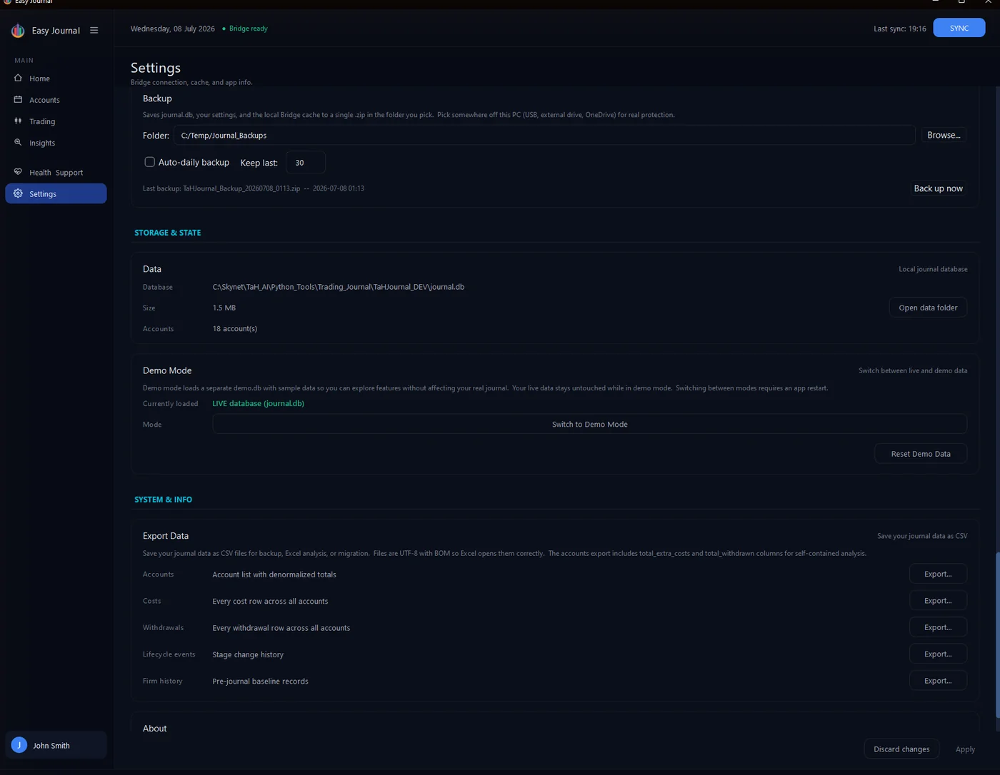

Look & Feel Appearance - Dark or Light theme. Click Apply after switching; the app reloads its views briefly.
Data pipeline - Bridge source

Bridge folder is where the NinjaTrader Bridge writes its snapshot files - set it with Browse... and confirm with Test connection. Below it you can see the local cache folder, how many snapshots are cached, and the time of the last sync. Feed snapshots from the relay is for remote setups: if NinjaTrader runs on a VPS, tick this, keep the relay URL, and paste the relay key from your welcome email. Test relay confirms the link. Local shared-folder setups leave this off.
Auto Sync


Sync from Bridge when the Journal launches does one check at startup. Auto Sync keeps watching the Bridge folder and pulls new snapshots as they appear. The poll interval (default 60 seconds) sets how often it looks; cache retention prunes cached snapshots older than the set days (0 = keep forever). Prefer fixed times? Tick Use scheduled times instead of watching and set up to three daily sync times. Sync now runs one immediately.
Display preferences Three timezone controls: Local timezone drives trade timestamps in tables. Global calendar and Per-account calendar decide which day each trade's P&L lands on - the default, CME session (17:00 Chicago rollover), matches how futures firms count trading days.
News & Calendars


Home calendar - tick Show news events to overlay economic news on the Home calendar; filter by currency and impact level; pick the display timezone; Refresh controls feed updates. Notifications - desktop pop-ups before events, with lead times in minutes, an impact filter, a sound, and an optional restriction list.

Event notifications and the Earnings calendar with its own API key and watched tickers.
Earnings calendar - show stock earnings releases on the calendar. It needs a free Finnhub API key (link next to the field); list the tickers you care about, and set separate notification lead times if you want warnings before earnings drop.
Risk & Alerts


Warn when balance is within X% of the drawdown limit - how early the "getting close" warning appears on Home and the Accounts badge. Actual breaches always flag regardless.
Backups & Safety Pick a backup folder, tick Auto-daily backup and choose how many to keep (default 30). Each backup zips your database, settings and local cache. Back up now takes one immediately. Put the folder somewhere off this PC - USB, external drive or a synced cloud folder.
Storage & State

Data shows exactly where your database lives, its size and account count - Open data folder jumps straight to it in Explorer. Demo Mode loads a separate demo database with sample data so you can explore without touching your real journal; switching modes restarts the app, and Reset Demo Data reseeds the sample.
System & Info Export Data saves each core table as a CSV for Excel: accounts (with totals), costs, withdrawals, stage history and firm history. About shows your app version - support will ask for it. Remember to click Apply (bottom right) after changing settings, or Discard changes to back out.